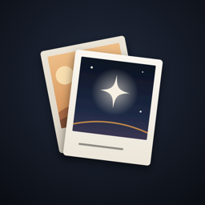
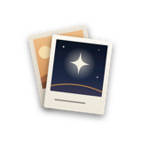

LifeReview（人生アルバム）一言日記・写真日記と、週末の振り返り · Bundle ID: com.happyboy1002.LifeReview
improve/score80-2026-10。内容は下の「1.1.0 の変更」）

| 項目 | 内容 |
|---|---|
| 図柄 | 「重ねた写真」。夕方の写真と夜空の写真の2枚が重なり、手前の写真の中に星と金の地平線、写真の下の余白に一行（一言日記の一行を表す）。背景は夜の藍 |
| 差し替えの理由 | 旧アイコン（星と地平線だけ）は天体・瞑想系のアプリに見え、写真日記・アルバムだと伝わらなかった（ISSUES LR-016）。ストア表示名を「一言日記・写真日記 - 人生アルバム」にした（1.0.2）こととも合っていなかった。星と金の地平線は手前の写真の中に残し、ダーク天体の意匠とのつながりを保つ |
| 表示ごとの3種 | 通常（AppIcon.png）／暗い表示用（AppIcon-Dark.png・背景を透過）／色付き表示用（AppIcon-Tinted.png・グレースケール）。いずれも 1024×1024 で Assets.xcassets/AppIcon.appiconset に置き、Contents.json の appearances（dark / tinted）で切り替える。1.0.x までは通常の1種だけだった |
| コミット | fd328c2（アイコン差し替え）・0372671（版を 1.1.0 (11) に） |
| 作図の元データ | workspace/research/lifereview/icon_2026-10/（B_final.svg / B_final_dark.svg / B_final_tinted.svg。ほかに比較した案 A_cover・C_spread） |
| 旧アイコン（1.0.x） | 夜空に星と金の地平線だけ。1.0.2 まで公開中のストアではこちらが表示される |
| 範囲 | 変更 | コミット |
|---|---|---|
| 今日タブ | 一番上に一行入力（「書く→残す」の2操作で保存・写真はボタン1つで1枚・今日まだ記録が無ければ開いた時点でカーソル）。カテゴリは任意にし、選ばなければ「その他」で残す。カテゴリ・気持ち・日付・2枚目以降の写真は「くわしく」から従来のフォームで（書きかけと写真を引き継ぐ）。上部に「記録した日 ○日・○日つづけて」 | b9a54bf 4fe014c c23afd1 |
| 初回画面 | 生年月日・目標年齢の入力を外し、「一行でいい。今日を、ひとつ残す。」と「はじめる」だけにした。生年月日は人生タブの案内から入れる（残り時間と人生の週は入れた人だけに出す） | b9a54bf |
| 毎日のお知らせ | 1件目を残した直後に「毎日○時に一言お知らせ」を時刻つきで選べる（通知の許可はこの時に初めて求める。拒否されたら「設定を開く」）。設定→リマインダーにも追加。押すと今日タブの入力欄へ、週のお知らせはふりかえりタブへ | c23afd1 1e140c0 |
| 振り返り | 「見返す」と「選ぶ」を1画面に統合。問いは最初の1問だけで、答えたい人は「もう1問答える」（空でも約5タップで終わる）。入力のある下書きがあれば開いた時点で「続きから／最初から」を聞く（LR-005）。振り返りを書き終えた直後にだけレビューを依頼（累計2回・90日間隔・同じ版で1回まで） | 85e39ea 1e140c0 c5b3f46 |
| 入口の配置 | ふりかえりタブの星図を最初から入口として出す。カレンダー・統計を振り返りカードの直下へ（「道具箱」→「記録をながめる」）。人生タブは大切な人・バケットリストを人生の週より上に。設定の歯車を3タブ共通の右上に。記録フォームの確定ボタンを「残す」に統一 | 3243961 |
| 人生タブ | ふだんは「いまの52週」（今年の段・経過・残り）だけを出し、80年ぶんのマス目は「ひらく」で別画面に。今週のマスに 1pt の輪郭、残りの週を少し濃くして経過との差を保つ | 7768499 a940fb6 |
| 明るい表示 | 設定の「表示」に「画面の明るさ」（端末に合わせる／明るい／暗い・既定は暗い）。明るい表示は生成りの紙（#FFFDF9）・墨藍の文字・濃い真鍮。カテゴリ8色・気持ち5色にも紙の上で読める濃い色を用意。星図と人生の週は明るい表示でも紙に墨藍で描き、ほかの画面と揃える | f2d8189 e4d519c |
| バックアップと復元 | LR-001/002: 写真を staging に書き切り、DB 保存の成功後に切り替える方式（失敗しても本番の写真に触れない）・写真をファイル単位で持つパッケージ形式（メモリは写真1枚ぶんで頭打ち）。LR-015: 写真名に ../ を含む細工したバックアップで記録が全部消える経路を塞いだ（ファイル名1つだけを受け付ける・復元前にマニフェストを検査し、壊れていれば何も置き換えずに断る）。iCloud にある写真は落としてから読む・保存に失敗しても元の記録が消えないよう1件ずつ削除する | 1e3fbfa 747f129 16c2621 |
| アクセシビリティほか | 和暦の端末でも西暦で出す・閉じるボタン 44pt・大きな文字・グラフの読み上げ（LR-004/007/008/009）。振り返りで段階が変わったら読み上げ位置を新しい見出しへ（LR-006）。全データ削除で毎日のお知らせも解除 | 6d9474e 73160df 1e140c0 |
| アイコン | 「重ねた写真」へ差し替え（上の節） | fd328c2 |
広告SDK・解析SDK・外部通信をいずれも持たない。記録・添付写真・プロフィールはすべて端末内にのみ保存し、 外部サーバーへ送信しない。アカウント登録も不要。
| 項目 | 内容 |
|---|---|
| App Privacy（ASC 申告） | データを収集していません（コード実態と一致） |
PrivacyInfo.xcprivacy | 2026-08-19 追加。NSPrivacyTracking: false /
収集データ型なし / NSPrivacyAccessedAPICategoryUserDefaults を CA92.1（アプリ自身の設定保存）で宣言。
UserDefaults は required reason API に該当するため、未宣言だと提出後に ITMS-91053 の警告対象になる |
| 写真ライブラリ権限 | 要求しない。写真添付は SwiftUI PhotosPicker（PHPicker）でプロセス外選択のため、
NSPhotoLibraryUsageDescription を宣言していない（意図的。審査メモにも明記） |
| 輸出コンプライアンス | ITSAppUsesNonExemptEncryption: false（HTTPS と Keychain のみ） |
| 配信 | 無料 / 日本のみ（日本語専用UIのため） |
| タブ | 役割 | 内容 |
|---|---|---|
| 今日 Today | 毎日の入口 | 記録した日数・一行入力（「書く→残す」・写真1枚）・毎日のお知らせの誘い・直近の記録・過去の今日・残り時間ミニ。カテゴリ等は「くわしく」から（写真は1件につき最大3枚） |
| ふりかえり Reflect ★中核 | 立ち止まり、言葉にする | 週/月/年レビュー・振り返りセッション（見返して選ぶ→問い1つから）・記録をながめる（カレンダー/統計）・これまでの軌跡（星図） |
| 人生 Life | 長期視点・有限性 | 大切な人・バケットリスト・（生年月日を入れた人だけ）カウントダウンといまの52週（「ひらく」で80年ぶん） |
設定は3タブ共通の右上の歯車から開く（1.1.0〜）。
タブごとに、そのタブが持つサブ画面まで通しで記述したもの。まずここを読む。
タブ仕様書から遷移する先を、1画面ずつ深く記述したもの。
UINavigationBarAppearance.largeTitleTextAttributes にカスタムフォントを載せてもタイトルが描画されず、
全タブが「タイトル分の余白だけ空いた無題画面」になっていた。Appearance でのフォント指定をやめ、
タイトルは ToolbarItem(placement: .principal) に自前で置く方式（minchoNavigationTitle(_:)）に変更した。
| 要素 | 仕様 |
|---|---|
| ナビゲーションバー背景 | ダーク天体背景色（night1: #10141C）。UINavigationBarAppearance で configureWithOpaqueBackground() + backgroundColor = UIColor(AppColors.night1)。 |
| タイトルの描画方式 | Views/Shared/MinchoNavTitle.swift の minchoNavigationTitle(_:)。ToolbarItem(placement: .principal) に AppFont.mincho(17, relativeTo: .headline)・kerning 0.8 の Text を置く。VoiceOver の二重読み上げを避けるため accessibilityHidden(true) を付け、戻るボタンのラベルと読み上げ用に navigationTitle 自体は残す。 |
| 明朝フォント | HiraMinProN-W3（AppFont.swift）。W6 は使わない。 |
| Appearance 側の役割 | 背景色と文字色（moonWhite）のみ。フォント指定は持たせない。 |
| tint（戻るボタン・ツールバー） | moonWhite（#EAE6DC）。.tint(AppColors.moonWhite) と bar.tintColor = AppColors.moonWhiteUI。以前は amber だったが、それだと人生タブの設定歯車が金になり、同画面の週グリッド「今週」マーカーと合わせて金が2点になる。「1画面につき金は1点」というアートディレクション規律に反するため月白に落とした。 |
| 大タイトル | 使わない。全画面 .navigationBarTitleDisplayMode(.inline)。 |
コールドスタート時の白フラッシュを抑止するため、Launch 画面をダーク天体の基調背景色（night1: #10141C）で塗る。
実装は project.yml の UILaunchScreen に UIColorName: LaunchBackground を指定する方式で、
storyboard は使わない。カラーセット LaunchBackground.colorset が実体。
オンボーディング画面の背景も同色で統一されているため、起動から最初の操作まで一貫したダーク天体体験になる。
| 項目 | 内容 |
|---|---|
| パイプライン | fastlane snapshot（UITest）→ raw_auto/ja-JP/ → build_store_images.js（Node + Puppeteer）→ store/ja-JP/ へ提出用デザイン（1320×2868px）を生成 |
| 実行コマンド | fastlane store で1コマンド完結 |
| 提出言語 | ja-JP のみ。 アプリはローカライズファイルを持たない日本語専用のため、UI が日本語のまま英語コピーを載せた画像はガイドライン 2.3.3（スクリーンショットは実際の使用状態を示すこと）に照らして弱い。英語対応するときは UI ごと訳して撮り直す。 |
| 保存先（提出元） | ~/Desktop/app-screenshots/LifeReview/store/ja-JP/（規約v2: store/ が唯一の提出元） |
| テンプレート | 共通ベース ios-apps/tools/store-screenshot-templates/ の v2 を、アプリ側の fastlane/design/templates/ にローカルコピーして使う（デザインはアプリ個別に育てる方針のため、共通ベースの更新は自動反映されない） |
| 解像度 | 1320 × 2868px（iPhone 17 Pro Max 6.9インチ） |
| 再現性の担保 | Snapfile で ios_version("26.5") を固定（同名デバイスが複数ランタイムに存在するため）、erase_simulator(true)（PreviewSeed はプロフィール未作成時のみ投入するので、端末を消さないと古いデータのまま撮れる）、only_testing で撮影用の5テストだけを実行（continueAfterFailure = false のため無関係なテストの失敗で撮影ごと落ちる） |
| Phase | 目的 | 状態 |
|---|---|---|
| S0 基盤 | 3タブ化・デザインシステム確立・SwiftData移行 | 完了 |
| S1 骨格 | 3タブ配置・今日タブ・人生タブ再配置 | 完了 |
| S2 振り返り中核 | 振り返りセッション・ホーム・タイムライン・道具箱 | 完了 |
| S3 拡張 | 感情の移ろいグラフ・リズムカードdue判定・星図段階表現・週次リマインダー通知 | 完了 |
| S4 仕上げ | オンボーディング刷新（ダーク天体）・ナビゲーションUIの統一（明朝タイトル）・Launch 画面（白フラッシュ抑止）・スクショ自動化パイプライン導入 | 完了 |
| S5 提出前の作り込み | 星図の座標安定化（starSeq + Halton）・Relation の生年月日化・ハイライト件数の実体化・カテゴリ/感情の配色再設計・grain 全画面適用・Dynamic Type 対応・タップ領域44pt化・iOS 26 ナビタイトル修正 | 完了 |
| v1.0 リリース | 無料・広告なし・App Store 提出 | 2026-09-02 公開 |
| 1.0.1〜1.0.2 | ストア表示の見直し（スクショ・名前・サブタイトル・キーワード）。コード変更なし | 公開 |
| 1.1.0 | 一行で書き終わる今日タブ・毎日のお知らせ・振り返りの簡略化・明るい表示・バックアップ/復元の修正（LR-015 ほか）・アイコン差し替え | TestFlight 1.1.0 (11)・未公開 |
| バージョン | 日付 | 変更内容 |
|---|---|---|
| v1.0 | 2026-06-15 | 仕様書ポータル初版作成。Phase S2「振り返り中核」実装完了分を反映（ふりかえりホーム・振り返りセッション・星図タイムライン・道具箱カレンダー/統計・データモデル・機能仕様書） |
| v1.1 | 2026-06-15 | Phase S3「拡張」実装完了分を反映: 感情の移ろいグラフ（toolbox-stats）・リズムカードdue自動判定（reflect-home）・StarMap段階表現+星座線（reflection-timeline）・リマインダー設定画面（reminder-settings）新規追加。ロードマップS3を完了に更新 |
| v1.2 | 2026-06-16 | Phase S4「仕上げ」実装完了分を反映: オンボーディング画面（LR-ONBOARD-01）新規追加・デザインシステム補足（ナビゲーションUI統一・明朝タイトル）・Launch画面（白フラッシュ抑止）・スクショ自動化パイプライン導入・マネタイズ方針（v1.0無料）・ロードマップS4完了に更新 |
| v1.3 | 2026-06-30 | タブ統合仕様書（LR-S01〜S04）新規追加: オンボーディング・今日タブ・ふりかえりタブ・人生タブの全サブ画面を網羅。データモデル仕様書に UserProfile・BucketItem・Relation を追記（v1.3）。全体仕様書カードの説明文を更新 |
| v1.4 | 2026-07-26 | 提出前の実装（S5）に合わせてポータル全体を更新。Bundle ID の誤記を修正（com.happyboy1002.lifeReviewApp → com.happyboy1002.LifeReview）。タブ統合版と重複していた旧 onboarding.html / reflect-home.html を削除し、画面仕様書を「タブ単位」「個別画面」の2区分に整理（リンク切れを解消）。ナビゲーションUIの記述を実装に合わせて全面改訂（iOS 26 でタイトルが描画されない問題への対応として minchoNavigationTitle 方式へ、tint を amber から moonWhite へ、明朝フォント名を HiraMinProN-W3 に訂正）。Launch 画面を storyboard 方式から UILaunchScreen + カラーセット方式の記述に修正。スクショ自動化を ja-JP 単独・テンプレv2ローカルコピー・再現性設定（ios_version 固定 / erase_simulator / only_testing）に更新。ステータスを「提出準備完了・未リリース」に、技術スタックを「Flutter 移行中」から移行済みに修正。「○年前の今日」を「過去の今日」に訂正 |
| v1.5 | 2026-08-26 | 初回提出直前の UI/UX 修正13件（コミット 4dcdba4・2026-08-25）をポータルに反映。設定画面の単独仕様書 screens/settings.html（LR-SETTINGS-01）を新規作成し、人生タブ（LR-S04）に埋まっていた設定の記述を移設（子の LR-REMINDER-01 に仕様書があるのに親が無い状態を解消）。更新: 今日タブ（記録フォームの破棄確認・スワイプ抑止・チップの修飾子順・「クリア」の配色）／振り返りセッションと機能仕様（STEP3 回答の打鍵ごと確定・下書きの期間重なり判定で週次の翌日再開が可能に・下書き periodStart の固定）／オンボーディング（現在年齢の常時表示）／人生タブ（残り0回の文言置換・想定年齢到達時の編集保存の免除規則）。ステータス行にテスト実績を追記 |
| v1.6 | 2026-10-24 | アプリ 1.1.0 (11)（TestFlight 配信・未公開）を反映。アプリアイコンを「重ねた写真」へ差し替えた件（fd328c2・LR-016）の節を新設し、新旧のアイコン画像と暗い表示用・色付き表示用の3種を掲載。1.1.0 のそれ以外の変更（一行入力の今日タブ・初回画面の簡略化・毎日のお知らせ・振り返りの統合・入口の配置・人生タブの要約表示・明るい表示・バックアップ/復元の修正 LR-001/002/015）を一覧の節にまとめた（個別の画面仕様書は未反映と明記）。ステータスを「未リリース」から「1.0.2 公開中・1.1.0 TestFlight」に、ストア表示名・デザインテーマ・ロードマップを更新 |
| v1.7 | 2026-10-24 | 1.1.0 (11) の内容を個別の仕様書へ反映した（S01 オンボーディング・S02 今日・S03 ふりかえり・S04 人生・振り返りセッション（画面・機能）・設定・リマインダー・データモデル）。バックアップと復元の機能仕様書 features/backup-restore.html（LR-FEAT-BACKUP）を新規作成しカードを追加。「1.1.0 の変更」節の「個別の仕様書は未反映」の注意書きを外し、タブ構成表と各カードの説明を 1.1.0 に合わせて更新 |